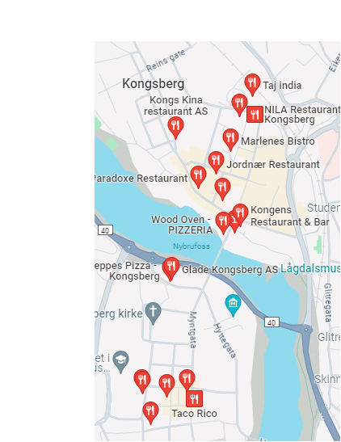

Restaurants
There are all sorts of restaurants in Kongsberg. Indian restaurants to traditional norwegian food, to international food they have everything. As you can see in the diagram to the left almost all restaurants are in Kongsberg sentrum or close to Nytorget.
Tips from a professional
As a person who has tried every restaurant in kongsberg i can say that my personal favorites are Jonas B and NILA. There are no restaurants that i wouldn't reccomend and it all inevitably comes down to personal preferance.
